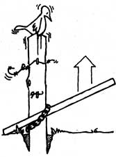

The removal of a line of fenceposts-especially when it must be accomplished by one person-is a backbreaker of a job. However, this handy tip (adapted with permission from Fences, Gates, and Bridges by George A. Martin, Stephen Greene Press, 1974) should save our farmer-readers-or anyone else who might have occasion to lift a post or two-a bit of money in liniment bills.
You'll need a sturdy pole-six feet long or more-and a two-foot length of chain with a strong hook at one end.
First, dig a spadeful of earth from each of two opposite sides of the post that you want out. The long lever-pole can then be fastened (as in the accompanying illustration) to the post with your chain and hook. Try for a snug fit ... move the hook around till it's right. Then, with the short end of the lever set on firm soil, lift the long end and thus raise the fencepost a few inches. After you repeat this process once or twice (slide the chain down after each lift), the formerly stubborn post should be loose enough for you to lift (quite easily too!) from its hole.-BW.
|
 |
|
|